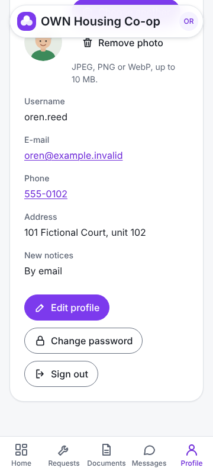
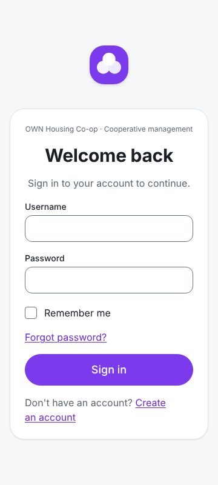

Member journey · Co-op platform
Sign out
Keep your details private
A good habit
1
On a shared computer
2
In a library
3
Keeps your details private
1 · Tap “Profile”
At the bottom of the screen
2 · Tap “Sign out”

Under Edit profile and Change password
On a computer
“Sign out” is beside “Change password”
Back to “Welcome back”

Sign in again any time
In short
1
Tap “Profile”
2
Tap “Sign out”
Thank you
Questions, however small, are welcome.